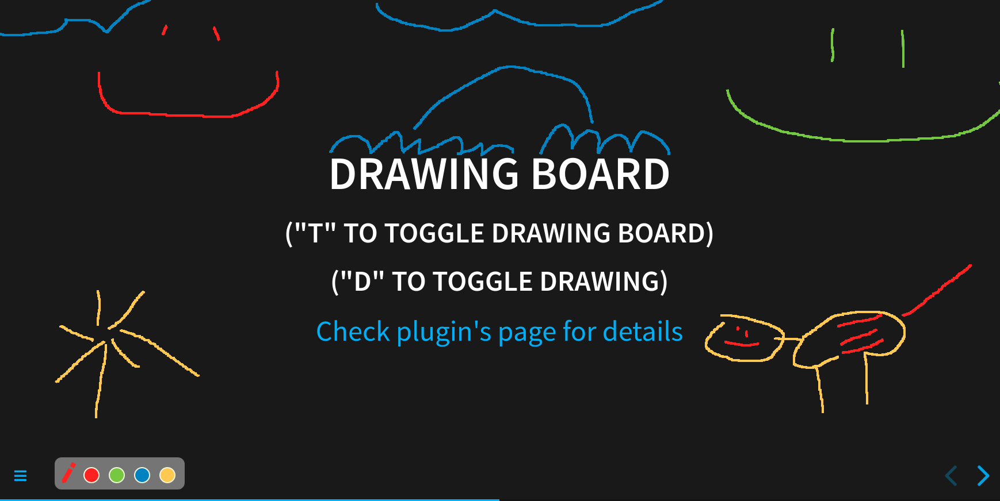
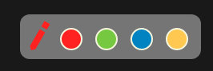
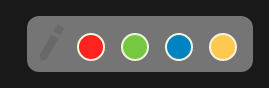

RevealJS drawer plugin (3.2KB gzipped)
Allows you to draw over your slides. Drawings are saved per slide and kept when slide is changed. Demo. Works with RevealJS Pointer Plugin.
This plugin only works with RevealJS
v4.xor higher.
No external dependencies, only 7.5KB | <3.2KB gzipped.

Installation
Copy dist/drawer.js into plugins/drawer/drawer.js and import script:
[...]
<script src="plugin/drawer/drawer.js"></script>
[...]Copy dist/drawer.css into plugins/drawer/drawer.css and import style in <head></head>:
[...]
<link rel="stylesheet" href="plugin/drawer/drawer.css" />
[...]Add RevealDrawer into your plugins initialization:
plugins: [RevealDrawer];Usage
Keybindings (default):
T- toggle drawing boardD- toggle mode (drawingornot drawing)Ctrl + Z- remove last line from current slide"1", "2", "3", "4"- change selected color (base on the order)
If you’re not changing anything in the Config then you should be able to show drawing board just by hitting T. By default the drawing is enabled.

If you hit D then drawing mode is toggled and it is going to switch to disabled mode (the pen icon is grayed out).

In drawing mode you’re not able to interact with other elements (like code) because it would disturb your drawing. That’s why switching between drawing and not drawing mode is important.
Each time you draw sth, it is saved for this particular slide (slide includes all fragments). You can switch between slides and have a different drawing on each one. Ctrl + Z is available if you make a mistake in your drawing. It also works per slide even if you’re coming back from the different slide.
You’re able to change between colors using color icons or numbers on the keyboard. Each color has a number assigned to it and if you have 4 colors then numbers 1,2,3,4 on your keyboard are responsible for switching between them (default option). If you change default colors then numbers are assigned to new ones (base on how many colors you have). E.g. you’ve decided to have simpler colors, so your list looks like ['#FF0000', '#00FF00', '#0000FF'], now only 1,2,3 keys are available.
Config
You can configure drawer key and tail length in plugin config.
Reveal.initialize({
drawer: {
toggleDrawKey: "d", // (optional) key to enable drawing, default "d"
toggleBoardKey: "t", // (optional) key to show drawing board, default "t"
colors: ["#fa1e0e", "#8ac926", "#1982c4", "#ffca3a"], // (optional) list of colors avaiable (hex color codes)
color: "#FF0000", // (optional) color of a cursor, first color from `codes` is a default
pathSize: 4, // (optional) path size in px, default 4
}
})List of available keys:
[“0”, “1”, “2”, “3”, “4”, “5”, “6”, “7”, “8”, “9”, “backspace”, “tab”, “enter”, “shift”, “ctrl”, “alt”, “pausebreak”, “capslock”, “esc”, “space”, “pageup”, “pagedown”, “end”, “home”, “leftarrow”, “uparrow”, “rightarrow”, “downarrow”, “insert”, “delete”, “a”, “b”, “c”, “d”, “e”, “f”, “g”, “h”, “i”, “j”, “k”, “l”, “m”, “n”, “o”, “p”, “q”, “r”, “s”, “t”, “u”, “v”, “w”, “x”, “y”, “z”, “leftwindowkey”, “rightwindowkey”, “selectkey”, “numpad0”, “numpad1”, “numpad2”, “numpad3”, “numpad4”, “numpad5”, “numpad6”, “numpad7”, “numpad8”, “numpad9”, “multiply”, “add”, “subtract”, “decimalpoint”, “divide”, “f1”, “f2”, “f3”, “f4”, “f5”, “f6”, “f7”, “f8”, “f9”, “f10”, “f11”, “f12”, “numlock”, “scrolllock”, “semicolon”, “equalsign”, “comma”, “dash”, “period”, “forwardslash”, “graveaccent”, “openbracket”, “backslash”, “closebracket”, “singlequote”]
Developing
Make changes in src/plugin.js and run:
npm run buildThis is going to produce dist/drawer.js with bundled iife file.